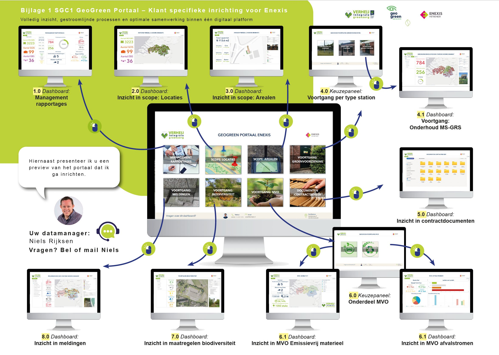
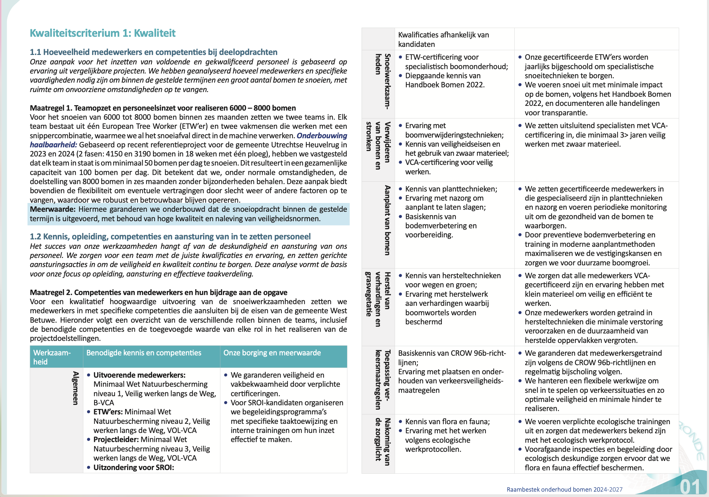

Meer dan 800 plannen in acht jaar tijd — voor gemeentes, aannemers en semi-publieke organisaties. Stakeholderkaarten, plannen van aanpak, visuele samenvattingen.
Sector
Overheid · Bouw · Infra
Werk
800+ plannen
Periode
2018 — 2026
Rol
Visual design · DTP
De vraag
Hoe maak je ingewikkeld beleid overtuigend?
Een EMVI-plan is geen folder. Het is het document waarmee aannemers opdrachten ter waarde van miljoenen wel of niet winnen. Beoordelaars lezen tientallen plannen naast elkaar. Wat ze het snelst begrijpen, wint.
Wat ik doe
Informatie vormgeven.
Kaarten die werkgebieden en stakeholders in één oogopslag laten zien. Infographics die procesketens samenvatten. Typografie die lezen makkelijker maakt. Elk plan: een eigen identiteit, maar altijd hetzelfde doel — begrijpen gaat voor mooi.

GeoGreen Portaal — dashboard-architectuur voor Verheij Integrale Groenzorg i.o.v. Enexis. Acht hoofdtegels, dertien sub-dashboards, één centraal overzicht.

Specialisatie
Acht jaar. Achthonderd+ plannen. Eén taal.
Minstens vijf plannen per week. Zes jaar lang, soms meer. Dit werk is stil — geen awards, geen publiciteit. Maar het draait miljarden. En ik weet hoe je een beoordelaar op bladzijde 37 nog gefocust houdt.